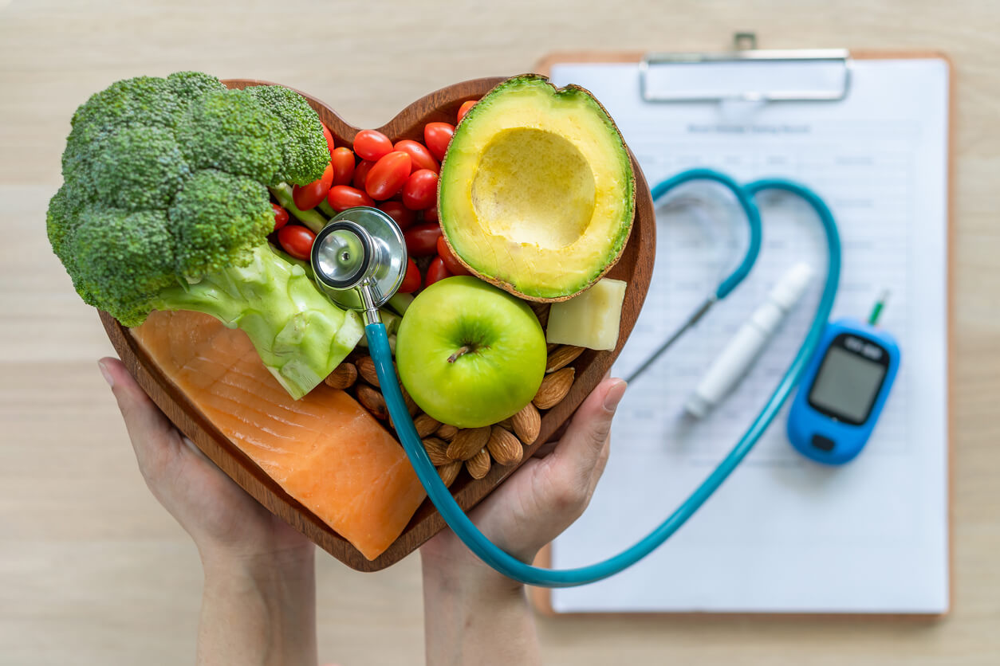
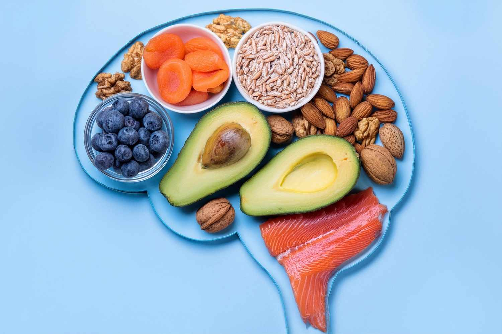

Benefícios de uma
Alimentação
Equilibrada
Analisando os principais benefícios de se ter uma alimentação equilibrada, podemos ter uma ideia maior de sua importância, confira:
Beneficios
-
Melhoria da saúde geral
A alimentação equilibrada é fundamental para a saúde ao longo da vida. Ao fornecer os nutrientes necessários para o corpo funcionar bem, ela não só ajuda a prevenir doenças, mas também promove o bem-estar físico e mental.

-
Controle de Peso
Uma alimentação balanceada é essencial para manter um peso saudável. Ela ajuda a controlar e a perder peso, prevenindo tanto a obesidade quanto a desnutrição, que são condições que podem comprometer nossa saúde e bem-estar.
-
Fortalecimento do Sistema Imunológico
Nutrientes como vitaminas e minerais são cruciais para o bom funcionamento do nosso sistema imunológico. Uma dieta rica nesses elementos fortalece o corpo, aumentando sua resistência contra infecções e outras doenças.
-
Redução do Risco de Doenças Crônicas
A alimentação equilibrada pode reduzir o risco de desenvolver doenças crônicas, como problemas cardíacos e diabetes. Essas são condições de longa duração que podem ser controladas ou prevenidas com bons hábitos alimentares. A combinação de uma dieta saudável com a prática de exercícios físicos potencializa ainda mais a diminuição desses riscos.
-
Melhor Saúde Mental
O que você come também afeta a sua saúde mental. Alimentos ricos em certos nutrientes, como os encontrados em peixes, sementes, carnes e vegetais, podem ajudar a reduzir os sintomas de depressão e ansiedade e a melhorar o humor.
Fonte: Aspesm
-
Maior Expectativa de Vida
Uma dieta equilibrada está diretamente ligada a uma maior expectativa de vida. Isso acontece porque ela ajuda a reduzir o risco de doenças relacionadas ao envelhecimento. Além disso, quanto mais cedo as pessoas adotam uma alimentação saudável, melhores são as chances de viver mais e com mais qualidade.

{kind=link}
Quer saber mais? Acesse:
Alimentação Equilibrada: Qual a Importância? Benefícios E Mais
A influência da alimentação na saúde mental: uma revisão sistemática